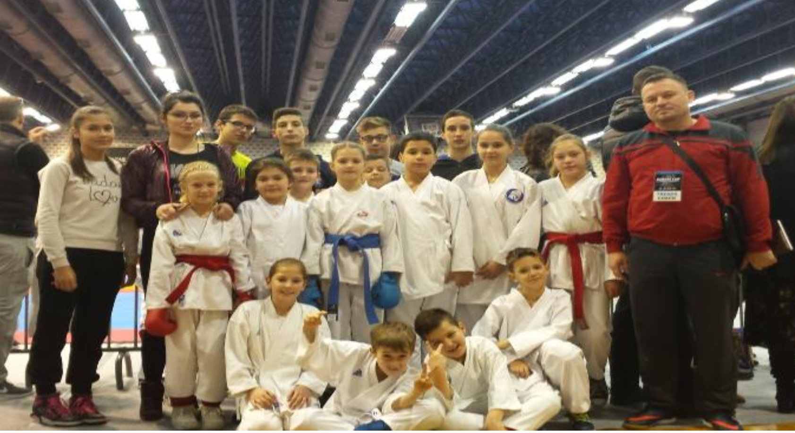
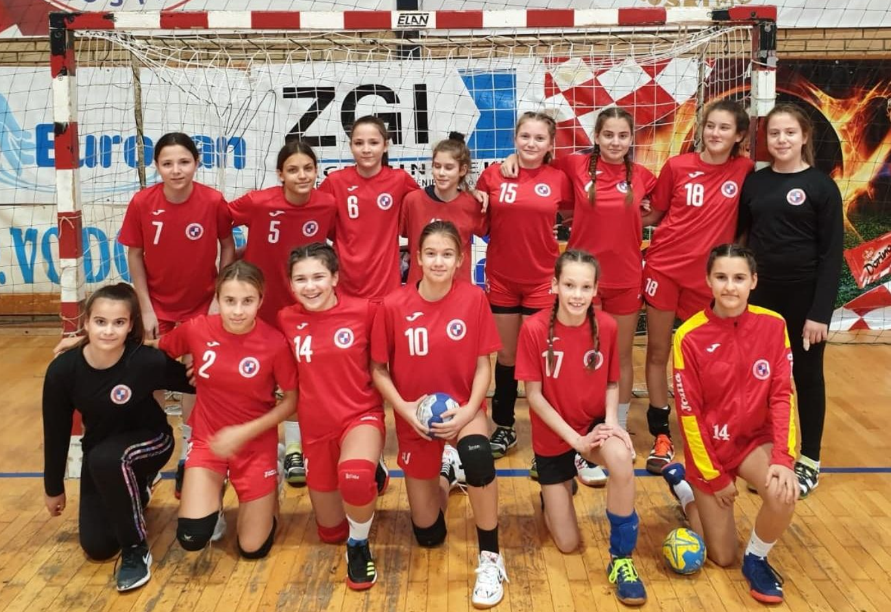
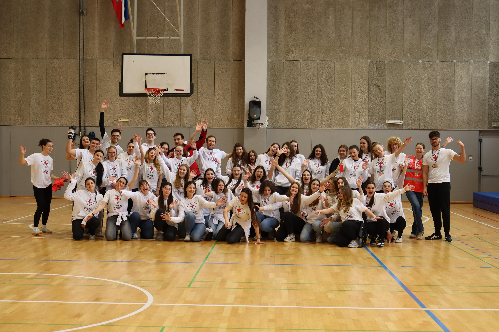
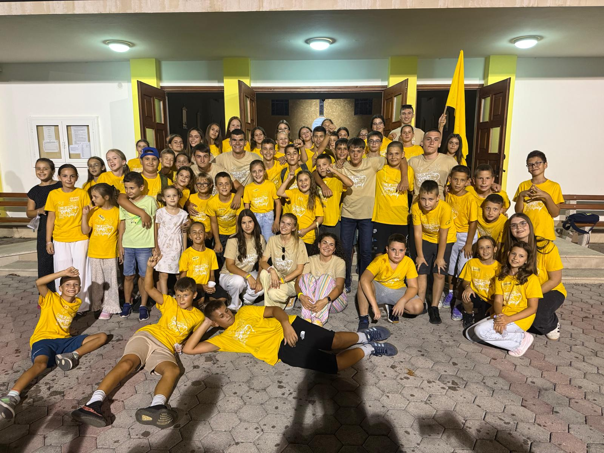
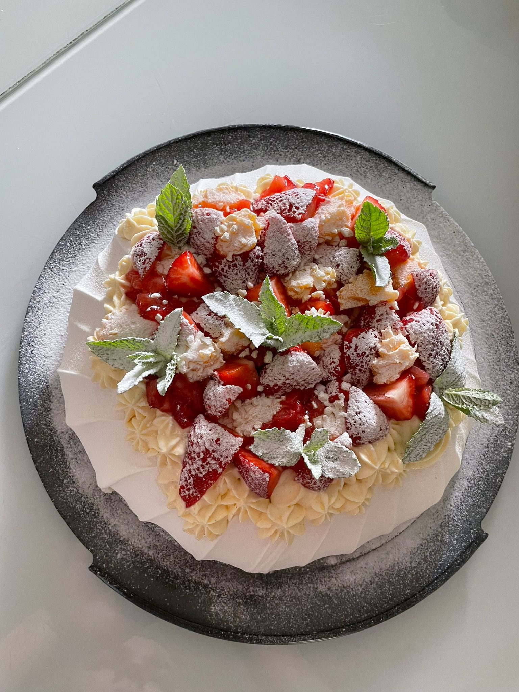

Croatian Red Cross
I volunteered with the Croatian Red Cross in Split for four years, participating in activities and helping organize events and competitions.
Sports, volunteering, creativity, and the things that make me who I am.
Sports have always been an important part of my life. I practiced karate for five years and played handball for another five years. These experiences taught me discipline, persistence, and teamwork.
Today, I enjoy strength training and running. I like challenging myself, improving my endurance, and working towards new personal goals.


Helping others and contributing to my community are very important to me. Volunteering has given me the opportunity to take responsibility, work with others, and develop my communication and organizational skills.
I volunteered with the Croatian Red Cross in Split for four years, participating in activities and helping organize events and competitions.
As an animator at Oratory Sidro in Gabela Polje, I helped organize and lead activities for children. This experience allowed me to combine my love for working with children with creativity, teamwork, and responsibility.
I have also been involved in activities with the Association Sveti Ivan in Prud, supporting community initiatives and local events.


Cooking is one of the ways I express my creativity. I enjoy experimenting with recipes, preparing different dishes, and sharing homemade food with family and friends.
What I enjoy most is creating something special that I can share with other people and use to make them happy.

Technology is more than just a subject I study. I enjoy exploring new tools, solving problems, and turning ideas into functional applications.
I especially like web development because it combines logical thinking with creativity. Learning new skills and seeing the results of my work motivates me to keep improving.
Explore my projects